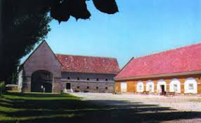

A Georgikon (régiesen Georgicon) a Festetics György gróf által alapított gazdasági tanintézet volt Keszthelyen; egyes épületeiben ma a Georgikon Majortörténeti Kiállítóhely működik, míg oktatási intézményként jogutódja a Pannon Egyetem Georgikon Kar.

Vissza a főoldalra